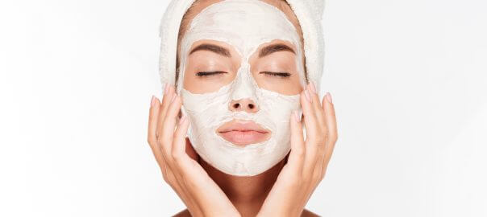
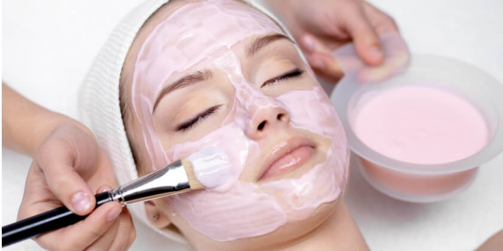
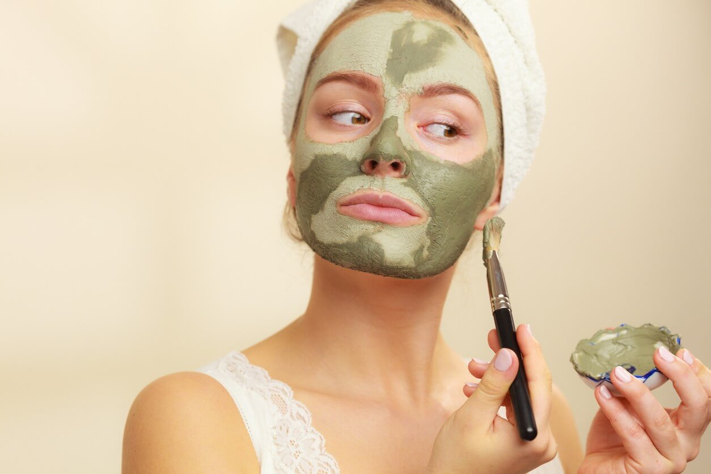

Mascarillas
Una mascarilla facial es un producto cosmético de textura normalmente cremosa o pastosa, que se aplica de manera ocasional sobre el rostro con el objetivo de mejorar el estado de salud de la piel.
Este producto, al ser aplicado sobre la piel, debe permanecer unos minutos formando una capa o máscara (de ahí su nombre) para que pueda realizar su efecto limpiador o reparador, y posteriormente es retirado.
Los componentes de una mascarilla facial van a ser variables, dependiendo del tipo de mascarilla que se trate. Podemos encontrar, pues, mascarillas formadas por minerales, o mascarillas formadas por productos orgánicos vegetales.
Mascarilla en crema

Las mascarillas tradicionales son las llamadas mascarillas en crema. Estas mascarillas son de textura ligera, untuosa y contienen gran cantidad de nutrientes. Estas mascarillas en crema se pueden utilizar en una parte específica de la cara, a diferencia de las máscaras de hidrogel.
Este tipo de mascarillas en crema debes retirarlas después de 15 minutos de acción con un disco de algodón o con abundante agua.
Mascarilla de arcilla

Este tipo de mascarilla facial se compone, principalmente, de arcilla. Existen diferentes tipos de arcillas, y las más empleadas suelen ser la arcilla roja y el caolín, las cuales se deben mezclar con agua (o pueden venir ya preparadas) previamente para poder ser aplicadas sobre el rostro.
Por lo general, el tiempo de aplicación de las mascarillas de arcilla es de entre 15 y 20 minutos.
Además de arcilla, se incluyen sales que permiten estimular la circulación sanguínea del rostro, lo cual sirve para realizar un mayor aporte de nutrientes.
La arcilla y el caolín (o arcilla blanca), son elementos minerales que sirven para eliminar las impurezas y los excesos de grasa, lo cual va a resultar muy indicado para aquellas pieles que presenten un exceso de sebo.
Esta característica va a hacer que aquellas pieles que ya sean secas de manera natural, deban emplear después de su uso una crema o loción hidratante.
Mascarilla Peel-Off

Las mascarillas peel off han ido perdiendo popularidad con el paso de los años por diversos motivos, entre los que se encuentran la irrupción en el mercado cosmético de nuevos productos con mejores propiedades.
Estas mascarillas consisten en un gel que se aplica sobre el rostro, y transcurrido el tiempo que indica el fabricante se puede retirar como una especie de piel.
Este método presenta ciertos inconvenientes, ya que retirarla puede llegar a ser una tarea bastante complicada si no se ha aplicado de forma correcta.
Otro inconveniente es el hecho de que durante este proceso de retirada, es muy probable que en algunos puntos de la cara la mascarilla produzca dolor si se ha quedado muy adherida a la piel.
Mascarillas Velo

Actualmente son las mascarillas más utilizadas debido a las ventajas y resultados que ofrecen.
Consisten en una máscara de celulosa empapada por una loción, en cantidad abundante, la cual contiene principios activos que ofrecen un efecto positivo sobre la piel del rostro.
Una vez han transcurrido 15 – 20 minutos, la máscara se retira con muchísima facilidad, y la loción que aun pueda quedar sobre el rostro se emplea como si de una crema se tratase hasta que es absorbida por completo.
Existen diferentes tipos de mascarillas velo, en función de los componentes que poseen, y que están orientadas a ofrecer resultados distintos. Entre los componentes destacan el ácido hialurónico, el colágeno, vitaminas, minerales